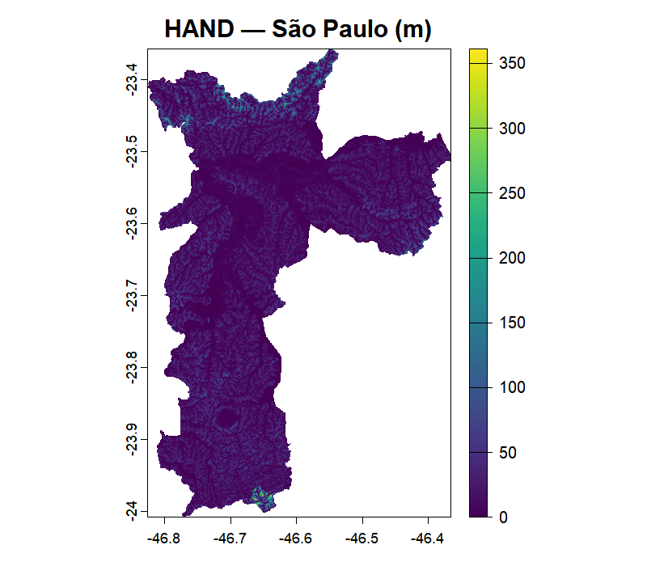
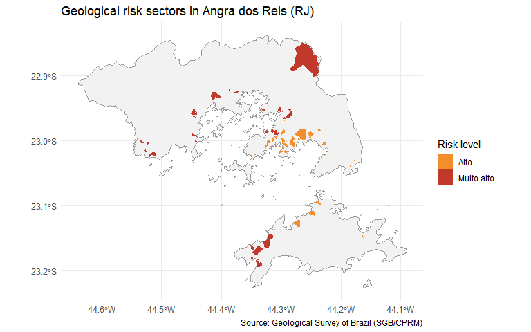

geohazards is an R package for extracting global data related to climate risk, susceptibility, and vulnerability. It provides a simple interface for accessing remote geospatial datasets (such as flood susceptibility indices, landslide risk maps, and geological hazard layers) directly from R, without manual downloading.
The package currently covers two data sources:
-
GLO-30 HAND:
read_hand()retrieves the Height Above the Nearest Drainage raster from the GLO-30 HAND dataset, at 30 m resolution, for any polygon supplied by the user. -
SGB/CPRM:
read_sgb()retrieves the geological risk cartography published by the Geological Survey of Brazil (risk sectorisation, flood mapping and disaster occurrences), whileread_sgb_report()downloads the technical reports deposited in its repository (RIGeo).
It is actively being expanded with new data sources and functions, and is planned for submission to CRAN.
Installation
You can install the development version of geohazards from GitHub with:
# install.packages("pak")
pak::pak("pedreirajr/geohazards")Example
The example below retrieves the HAND raster for the municipality of São Paulo, Brazil. HAND measures, in metres, how high each point of the terrain is above the nearest drainage channel, with lower values indicate greater flood susceptibility.
library(geohazards)
library(geobr)
# Look up the IBGE code for São Paulo and download its boundary as an sf object
spo_ibge <- lookup_muni("São Paulo")$code_muni
spo_geo <- read_municipality(code_muni = spo_ibge, year = 2022)
# Fetch the HAND raster clipped to the municipality boundary.
# Data is read remotely via Cloud Optimized GeoTIFF (no full tile downloads).
spo_hand <- read_hand(place = spo_geo)
# Visualise the result
terra::plot(spo_hand)
Geological risk cartography (SGB/CPRM)
The example below inspects what the Geological Survey of Brazil has mapped for a municipality and then downloads its risk sectorisation. Before downloading anything, sgb_inventory() reports which products exist and how many features each one has.
library(geohazards)
# The catalogue of products
knitr::kable(sgb_products())| product | service | theme | type | key | scope | queryable |
|---|---|---|---|---|---|---|
| risk | risco | risk | cartography | cd_geocmu | municipality | TRUE |
| risk_amazonas | risco_am | risk | cartography | cd_geocmu | municipality | TRUE |
| flood | inundacao | flood | cartography | municipio | municipality | TRUE |
| occurrence_pending | not_homolog_desastre_google | occurrence | occurrence | municipio | national | TRUE |
| occurrence_mobile | risco_mobile_google | occurrence | occurrence | municipio | national | TRUE |
| hazard | perigo | susceptibility | cartography | cd_geocmu | municipality | FALSE |
| debris_flow | corrida_de_massa | debris flow | cartography | municipio | municipality | FALSE |
| relief_pattern | padrao_relevo | relief pattern | cartography | municipio | municipality | FALSE |
| occurrence_approved | homolog_desastre_google | occurrence | occurrence | municipio | national | FALSE |
# What exists for a specific municipality
knitr::kable(sgb_inventory("Angra dos Reis", state = "RJ"))| name_muni | abbrev_state | theme | product | type | n_features |
|---|---|---|---|---|---|
| Angra dos Reis | RJ | risk | risk | cartography | 75 |
| Angra dos Reis | RJ | flood | flood | cartography | 198 |
read_sgb() returns the requested product as an sf object in SIRGAS 2000 (EPSG:4674). The default product is the risk sectorisation, with every risk level mapped by the SGB.
library(dplyr)
library(sf)
angra <- read_sgb("risk", municipality = "Angra dos Reis", state = "RJ")
# Sectors and people at risk by risk level
table(angra$risk_level)
#>
#> Alto Muito alto
#> 44 31
angra |>
st_drop_geometry() |>
summarise(n_people = sum(n_people, na.rm = TRUE), .by = risk_level)
#> risk_level n_people
#> 1 Alto 31944
#> 2 Muito alto 12904
library(ggplot2)
# Municipality boundary for context
angra_muni <- geobr::read_municipality(code_muni = angra$code_muni[1],
year = 2022, showProgress = FALSE)
ggplot() +
geom_sf(data = angra_muni, fill = "grey95", colour = "grey60") +
geom_sf(data = angra, aes(fill = risk_level), colour = NA) +
scale_fill_manual(values = c("Alto" = "#f28e2b", "Muito alto" = "#c0392b"),
name = "Risk level") +
labs(title = "Geological risk sectors in Angra dos Reis (RJ)",
caption = "Source: Geological Survey of Brazil (SGB/CPRM)") +
theme_minimal()
Important: the SGB mapping is not universal. A municipality with no features comes back as an empty sf object with a warning. Absence of mapping is not absence of risk.
If you use {geohazards} in your work, please cite it as:
Pedreira Junior, J.U. & Pedrassoli, J. (2026). geohazards: an R package for extracting global data related to climate risk, susceptibility, and vulnerability. GitHub repository: https://github.com/pedreirajr/geohazards